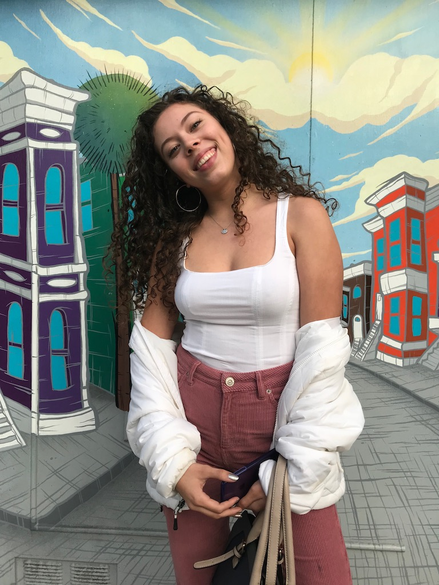

About Me:
Welcome! My name is Sofia Murray and i'm currently a third year Computer Science major at UCSB. The three things I love the most are my grandma, food, and cooking food with my grandma.
Welcome! My name is Sofia Murray and i'm currently a third year Computer Science major at UCSB. The three things I love the most are my grandma, food, and cooking food with my grandma.